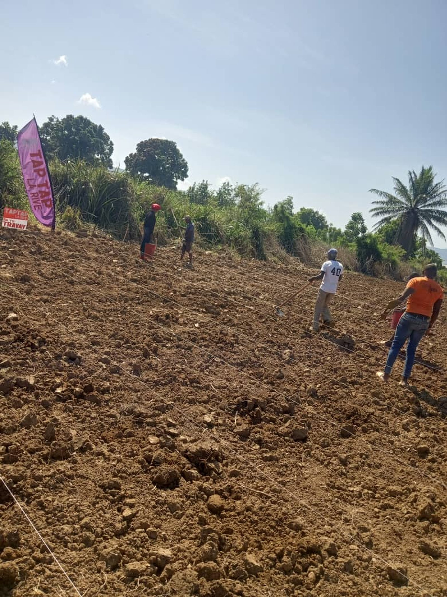
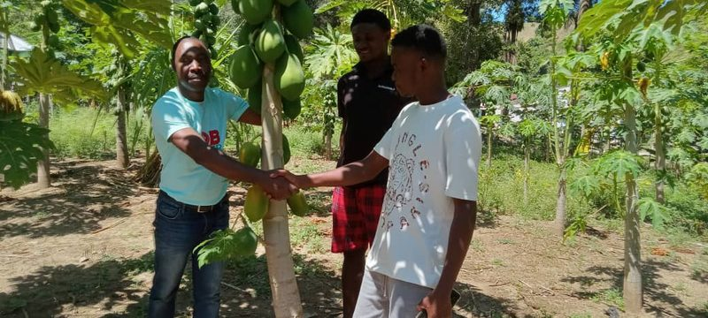
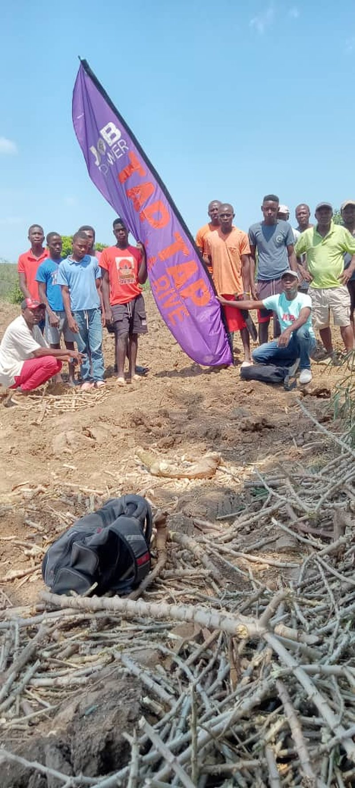
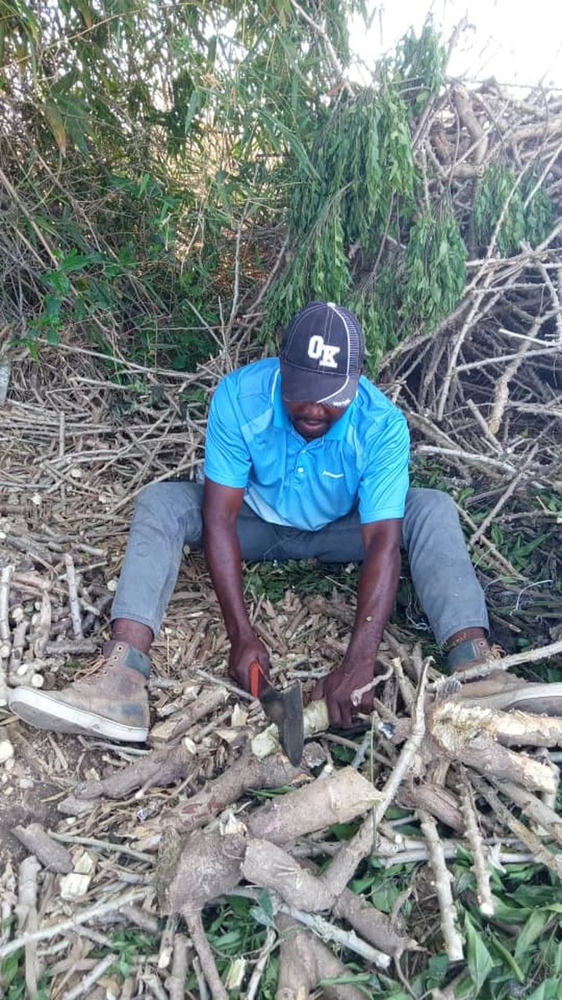
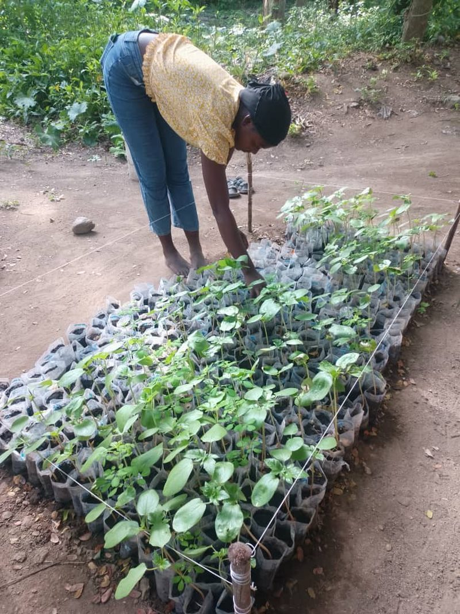
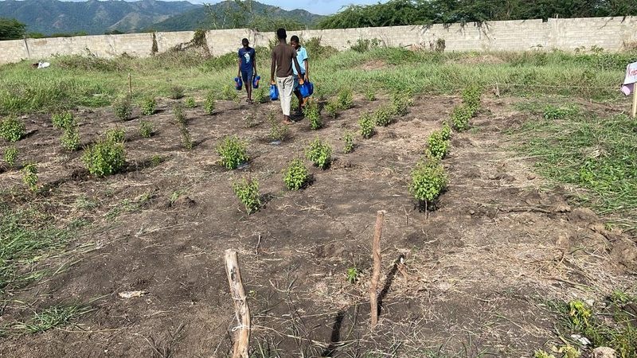
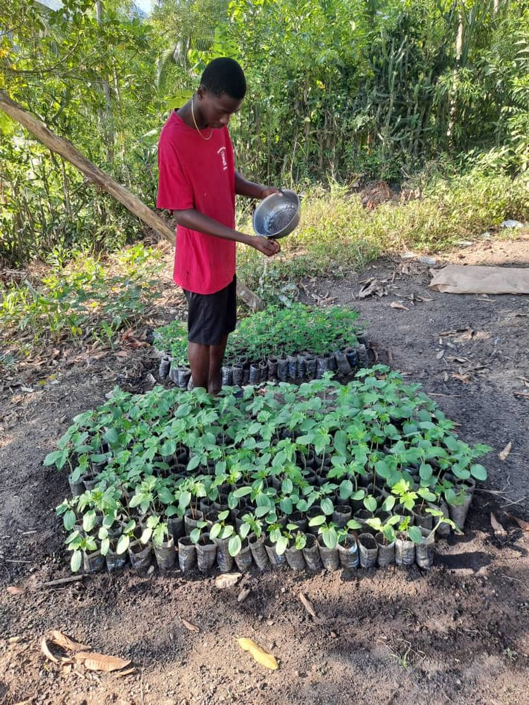

Le premier. Le modele. Cayes-Jacmel. Tout ce que vous voyez ici sera replique 24 fois. The first. The model. Cayes-Jacmel. Everything you see here will be replicated 24 times.

| Equipement | Equipment | Statut | Status | Notes |
|---|---|---|---|---|
| Station d'inscription | Enrollment station | En serviceIn use | -- | |
| Lecteurs NFC (x3) | NFC readers (x3) | En serviceIn use | -- | |
| Cartes NFC (50) | NFC cards (50) | 40 emises40 issued | 10 restantes | 10 remaining |
| Imprimante | Printer | RechercheNeeded | Financer: $2,000 | Fund: $2,000 |
| Four BonZeb / BonZeb kiln | En serviceIn use | -- | ||
| Filtres eau (x5) | Water filters (x5) | En serviceIn use | -- | |
| Bibliotheque (50 livres) | Library (50 books) | 35 livres35 books | 15 a financer | 15 to fund |
| Toilette SOIL / SOIL toilet | En serviceIn use | -- |





